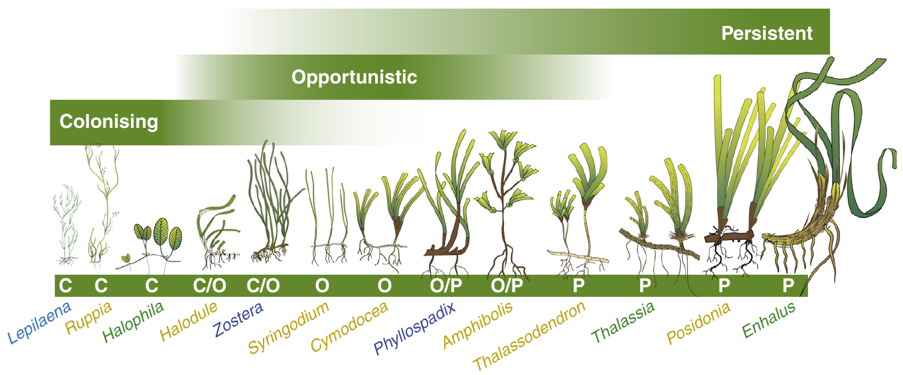
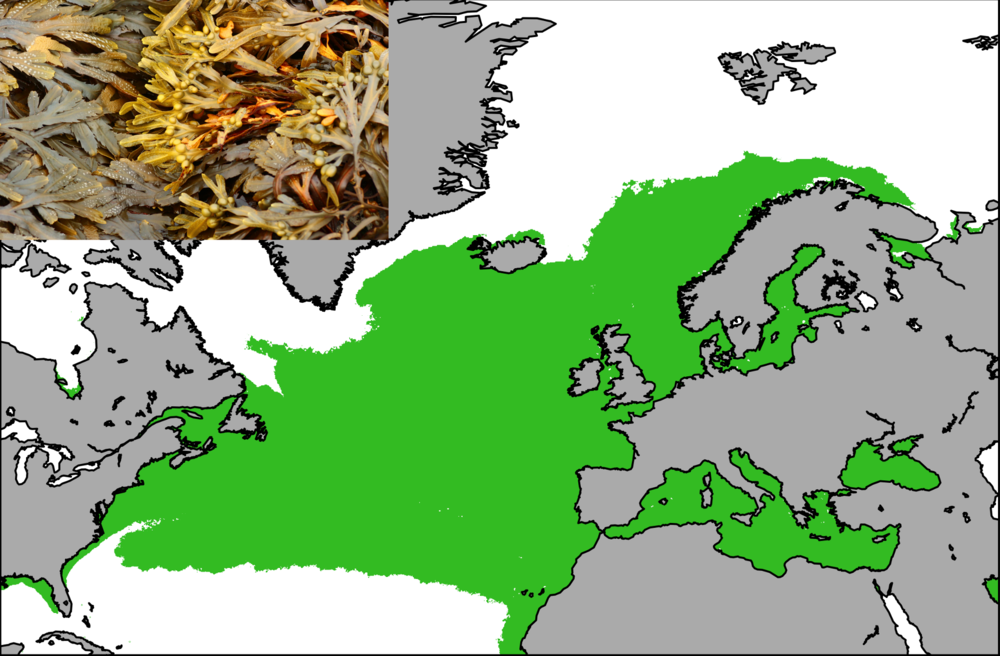
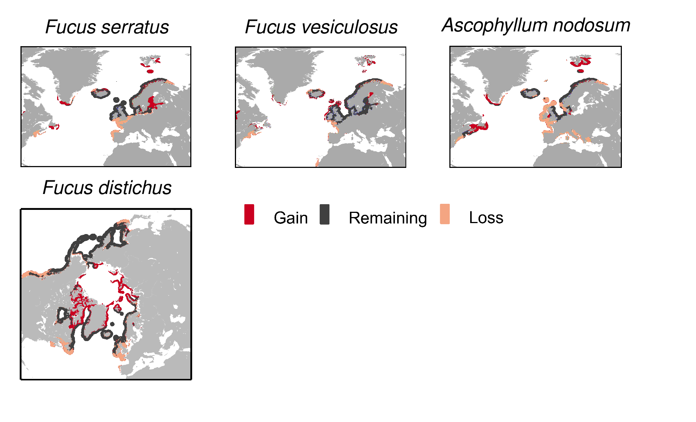
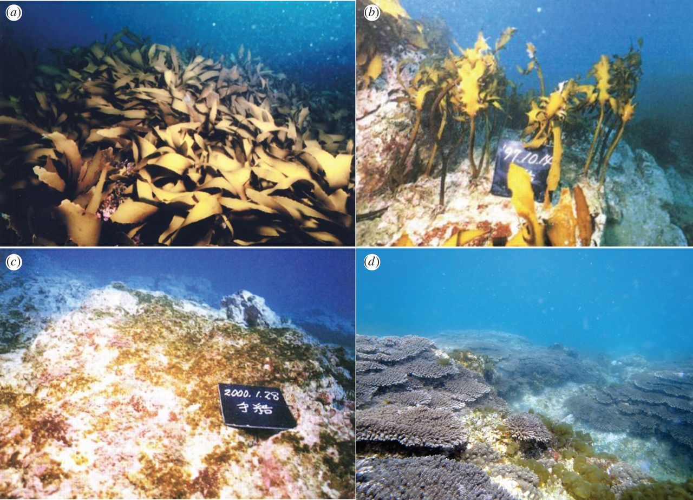
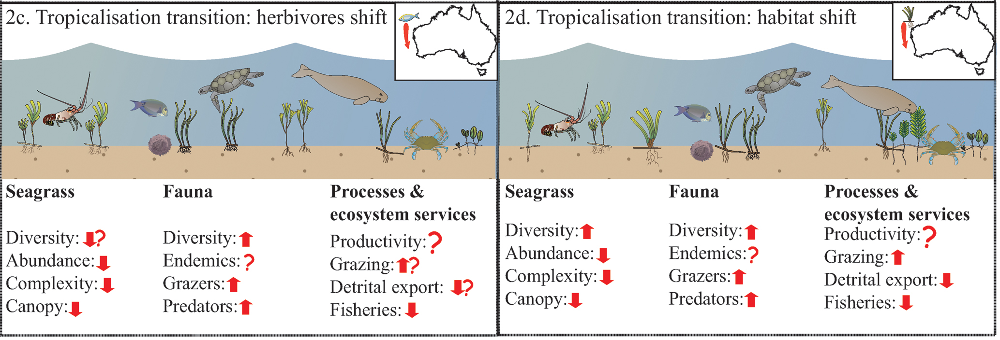
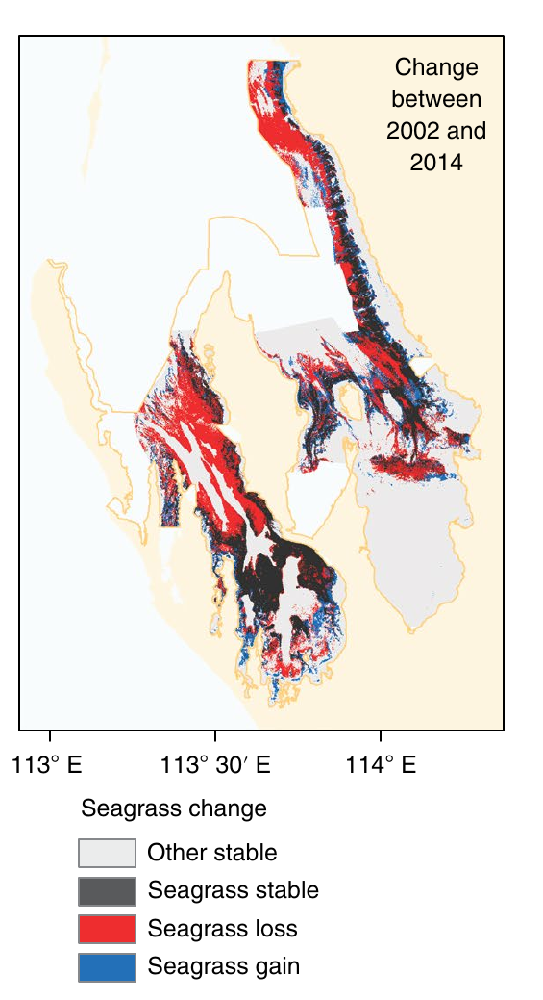

Climate change impact on
ocean forests
and their biodiversity
Trial lecture 03.05.2019
Alexander Jueterbock, Researcher at Nord University
The origin of fjords -
a hint to climate changes in the past

Ice ages in earth history

Causes of climate fluctuations
Pleistocene ice ages

Changes in
- Sea level
- Ocean currents
- Ocean gateways
Fluctuations in temperature and CO2

Ocean acidification -
the other CO2 problem

Recent land and ocean warming

Recent vs. historical warming

Predicted temperature increase

+6°C in next 200 years
>4 times faster than historical temperature changes
What is the impact on
ocean forests
and their
biodiversity?
Ocean forests
seagrass vs. seaweed (macroalgae)

Algae and plants are not closely related
Seaweed: >5,000 species
Seagrass: ca. 60 species
Seaweed growth forms

Kelp distribution
Fucoid (and kelp) distribution
Seagrass growth forms
Seagrass distribution
What is the impact on
ocean forests
and their
biodiversity?
Why should we care about the climate change impact on ocean forests?
Ecosystem services are
worth
>16 000 Euros ha-1 year-1
Nursery grounds
Protection from erosion
Habitat and food
Nutrient fixation
Protection from desiccation
Carbon sequestration

Carbon sequestration
Source of alginates
What is the impact on
ocean forests
and their
biodiversity?
What climate-change related factor has the highest impact?
Temperate seaweed distribution limited by
10°C summer and 20°C winter isotherm

Identifying most important range-limiting factors

Temperature as most important factor for
dominant macroalgae

Projected pH decrease
pH fluctuations in macroalgal beds
pH profile through a Fucus belt under calm conditions day time = black dots, night time = white dots) and on a windy day (black triangles).Acidification is beneficial
Seagrass and most macroalgae can use CO2 and bicarbonate for photosynthesis
Acidification can not counteract warming in
Zostera noltii


What is the impact on
ocean forests
and their
biodiversity?
The biodiversity of ocean forests
Levels of biodiversity
- genetic
- species
- ecosystem
Climate change impact on genetic diversity
Genetic diversity of Fucus serratus
Three glacial refugia

Genetic diversity important for
- Adaptability and long-term survival
Genetic diversity enhances survivability

Genetic diversity important for
- Adaptability and long-term survival
- Survivability under stress
...heat stress recovery..
in Zostera marina
Genetic diversity important for
- Adaptability and long-term survival
- Survivability under stress
- Resilience
...biomass and faunal abundance...
in Zostera marina

Genetic diversity important for
- Adaptability and long-term survival
- Survivability under stress
- Resilience
- Ecosystem services
- Restoration
Predicted range shifts until year 2200
1999: extensive meadows of Fucus serratus

James Coyer
2010: 90% abundance decline in 11 years
Dwarf forms with reduced reproductive capacity in Spain

1,250 km loss of southern range of Fucus vesiculosus
Range shift projections for Zostera noltii
Loss of high diversity in the south


Centers of genetic diversity (glacial refugia) are threatened with extinction RELEVANCE OF EPIGENETIC VARIAION IN SEAGRASS?
Upwelling regions and deep reefs as climate change refugia

Upwelling regions along shores of SW-Iberia and NW-Africa are climate change refugia for Fucus guiryi
Climate change impact on species diversity
Increasing diversity in the Arctic
Dispersal and invasive potential
Ongoing colonization of Arctic regions
Loss of canopy-forming seaweeds in warm-temperate regions

Shifts from kelp forests to turf
Flattending diversity
Future scenarios for temperate kelp forests
Rising temperatures favor mussel recruitment
fish control of macroalgal biomass on coral reefs
Poleward shift of herbivorous fishes

Tropicalization of kelp forests in Southern Japan
Current difference between temperate and tropical seagrass ecosystems

Tropicalization of temperate seagrass meadows
36% of Shark Bay's temperate seagrass meadows damaged after heatwave in 2010/2011
Increasing species diversity in the Arctic
Regime shift (tropicalization) in warm-temperate regions
Transition from high over low to high diversity
What is the impact on
ocean forests
and their
biodiversity
Additional slides
Ecological Niche Modeling to predict future distribution
Common garden heat stress experiments
Common garden heat stress experiments

Photosynthetic performance
Heat stress response

...density and productivity.
in Zostera marina
Warming stimulates growth in northern populations

Poleward range extension of Laminaria hyperborea

Kelp
Seagrass
Temporal stability of genetic diversity

Temperature tolerance of a population
 What impact do we expect from this knowledge?
What impact do we expect from this knowledge?
Impact of climate change
Intertidal species are particularly sensitive

Why are seaweeds ideal organisms to study climate change impact?